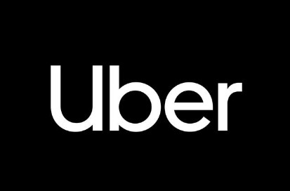

Built a next word prediction model using Tensorflow, PyTorch & Keras, used LSTM, Bi-LSTM, Distill-Bert and Bert
Transformer with a highest accuracy of 96%.
Converted unstructured data (JSON) files after pre-processing to relational data (SQL files) using MongoDB and parsing through python.
Wrote SQL queries including: views, stored procedures, Triggers and Functions. Python was used to interact with the SQL database and the system showed numerous operations (like CRUD) for 2 types of users; customers and
admin.

Pulled data from twitch API, compared K-means and GMM for clustering features and further incorporated these to develop
a Content Based Recommendation System (SVD and ALS methods) for streamers and games with a best precision of 9.1.

Made a machine learning model and the deployment as a web app, that showed 20 different types of visualisations. Allocation of Uber resources for
15 cities and 3000 vehicles.
This model is built to sort posts on Reddit platform into "depressed" and "not depressed" categories.
LSTM (Long short-term memory) type of RNN, to train the model, with the training accuracy of 91% and testing of 82%.
The model passed with twitter information of 2000 keywords giving an accuracy of 78%. Deployed using Azure DevOps and Azure machine
learning services.
A Recurrent neural network model built to predict the production of milk and perform time series analysis on the data to generate reports.
Note: Undisclosed code due to company's policy.
Resume Sorting Machine learning model.
A resume screening ML model that could sort out resumes with specific keywords and skills present. “KNeighbours classifier” charged this multi
classification model with 70% data for training and 30% for testing.
Name Entity Recognition using NLP and PDF content extraction.
Created XGBoost, Logistic Regression, and Random Forest models to classify PDF content, enhancing component extrac�tion efficiency across 500k pages.
Incorporated NLP tools like Prodigy, Power Automate, and Azure Form Recognizer for entity extraction, achieving a
95-97% accuracy to streamline data processing workflows. Collaborated with the AI Lab using OpenAI & Python, coupled with ML model development using Tabula, Camelot, and
PdfPlumber for enhanced Named Entity Recognition capabilities for 50k PDFs.
Web Scraping Automation.
Performed web scraping using UIPath automation, enhancing data retrieval processes by saving 60 hours weekly.